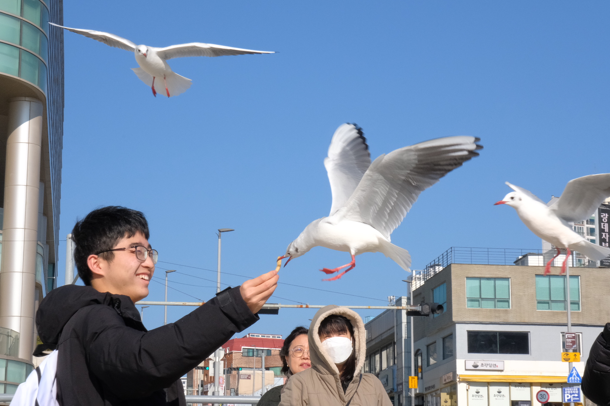
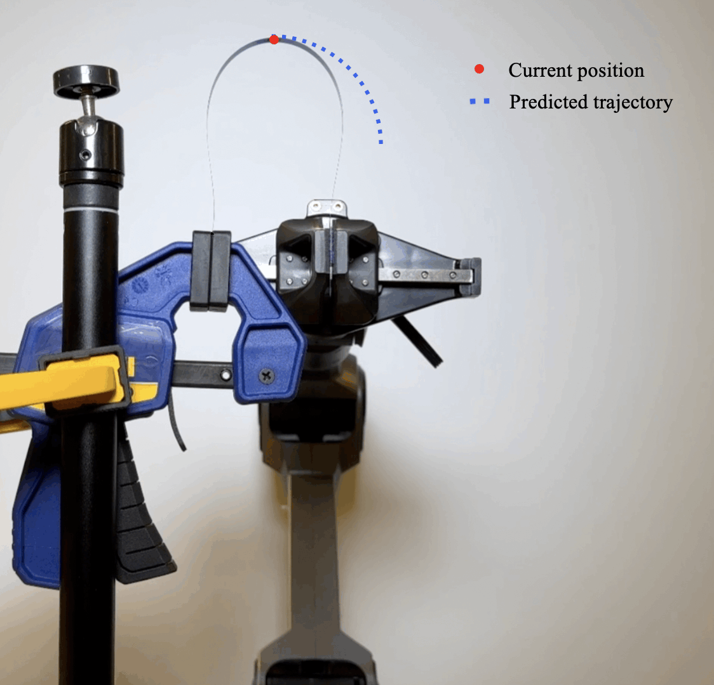
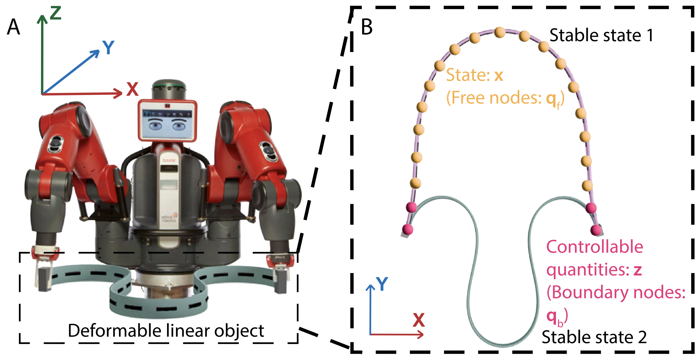
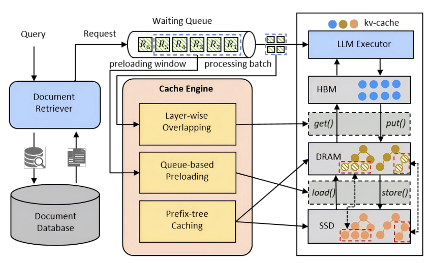

|
Hengyi (Henry) Zhou I am a junior student with a dual-degree program in Mechanical Engineering at Shanghai Jiao Tong University and Computer Engineering at the University of Michigan. I once worked in SAIL Lab led by Professor Chao Li at SJTU. After arriving at the University of Michigan, I joined the Hybrid Dynamic Robotics Lab led by Professor Xiaonan (Sean) Huang. My research interests have gradually transitioned from high-performance computing to robotics. I aim to develop into a full-stack robotics researcher, bringing AI methods into the physical world. Currently, my research focuses on the simulation and manipulation of soft structures and sensors through machine learning methods. I am actively seeking a Ph.D position in robotics, CS, ECE or related fields starting in Fall 2027. |
 |
{kind=link}
ResearchI am committed to leveraging AI-driven approaches to tackle challenges in the optimization and design problems in robotics and to building reliable systems which interacts between intelligence and real-world environments. Ultimately, I aspire for my research to promote technological accessibility and create tangible societal impact. Currently, my research focuses on the simulation and manipulation of soft structures and sensors through machine learning methods. |
|
  |
Neural Control: Adjoint Learning Through Equilibrium Constraints
Dezhong Tong, Jiawen Wang, Hengyi Zhou, Yinlong Shen , Xiaonan Huang M. Khalid Jawed In submission to ICML, 2026 paper to be released / code to be released Proposing Neural Control, a memory-efficient adjoint-based framework for controlling multi-stable physical systems by computing trajectory-aware gradients without unrolling equilibrium solvers, enabling robust long-horizon manipulation of deformable objects. |
|
 
|
PCR: A Prefetch-Enhanced Cache Reuse System for Low-Latency RAG Serving
Wenfeng Wang, Xiaofeng Hou, Peng Tang, Hengyi Zhou, Jing Wang, Xinkai Wang, Chao Li, Minyi Guo In submission to TACO (ACM Transactions on Architecture and Code Optimization) arXiv Introducing new PCR system that improves RAG inference efficiency by maximizing KV-cache reuse through smarter caching, pipelined data transfer, and prefetching, significantly reducing latency (up to 2.47× faster TTFT). |
Miscellanea |
Teaching |
Grader, EECS216 (Intro to Signals and Systems) WN26 at Umich Teaching Assistant, ENGR101 (Intro to Engineering) SU25 at SJTU |
Award |
Wang Chu Chien-Wen Summer Research Award 2026 from Umich
Jackson and Muriel Lum Scholarship & Fellowship 2025 from Umich Yu Liming Scholarship 2025 from SJTU |
|
Thanks to Jon Barron for the website template. |